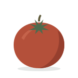

O nas
SIELORA to restauracja, w której pora roku ustala kartę. Opowiadamy, skąd wzięła się nazwa i jak pracujemy w kuchni.
Skąd nazwa
SIELORA łączy dwa słowa: sielsko i pora. Sielsko, bo cenimy spokój, prostotę i jedzenie, przy którym nikt się nie spieszy. Pora, bo to pory roku decydują, co trafia na talerz.
Kiedy pojawiają się pierwsze szparagi, zmienia się karta. Kiedy dojrzewają pomidory, zmienia się znowu. Tak gotujemy przez cały rok, a każda karta trwa mniej więcej tyle, ile jej najważniejsze składniki.
Jak pracujemy
Każde danie przechodzi tę samą drogę, od zakupów po stół.
Zaczynamy od produktu
Co tydzień sprawdzamy, co oferują sprawdzeni dostawcy warzyw, ryb i serów. Od tego zależy, co ugotujemy.
Gotujemy od podstaw
Pieczemy pieczywo, lepimy makarony i gotujemy wywary na miejscu. Nie używamy gotowych sosów ani mieszanek przypraw.
Podajemy z umiarem
Porcje są takie, żeby zostało miejsce na deser. Na talerzu jest tylko to, co potrzebne danemu smakowi.
Słuchamy gości
Pytamy o alergie, diety i okazje. Jeśli danie można zmienić bez szkody dla smaku, zmieniamy je.
Rok w naszej kuchni
Każda pora roku ma w karcie swoje składniki. Te pojawiają się u nas najczęściej.
-
Wiosna
marzec–maj
Szparagi, rabarbar, młode ziemniaki, rzodkiewki i pierwsze zioła.
-

Lato
czerwiec–sierpień
Pomidory, cukinia, bób, jagody i świeża bazylia.
-
Jesień obecna karta
wrzesień–listopad
Dynia, borowiki, buraki, gruszki i orzechy włoskie.
-
Zima
grudzień–luty
Pasternak, seler, kapusta, jabłka z przechowalni i dania, które długo się duszą.
Na czym nam zależy
Szacunek do produktu
Wykorzystujemy składniki w całości. Z obierków gotujemy wywary, a z wczorajszego pieczywa robimy grzanki i kruszonki.
Jasna informacja
Przy każdej pozycji w karcie podajemy skład i alergeny. Na pytania o pochodzenie produktów odpowiadamy wprost.
Uważność
Kolacja to często ważna okazja. Pilnujemy tempa podawania dań i tego, żeby nikt nie czekał na rachunek.
SIELORA jest restauracją fikcyjną. Opisane zasady, wnętrze i oferta służą prezentacji projektu strony.
Spróbuj jesiennej karty
Zajrzyj do menu albo od razu zarezerwuj stolik na wybrany wieczór.